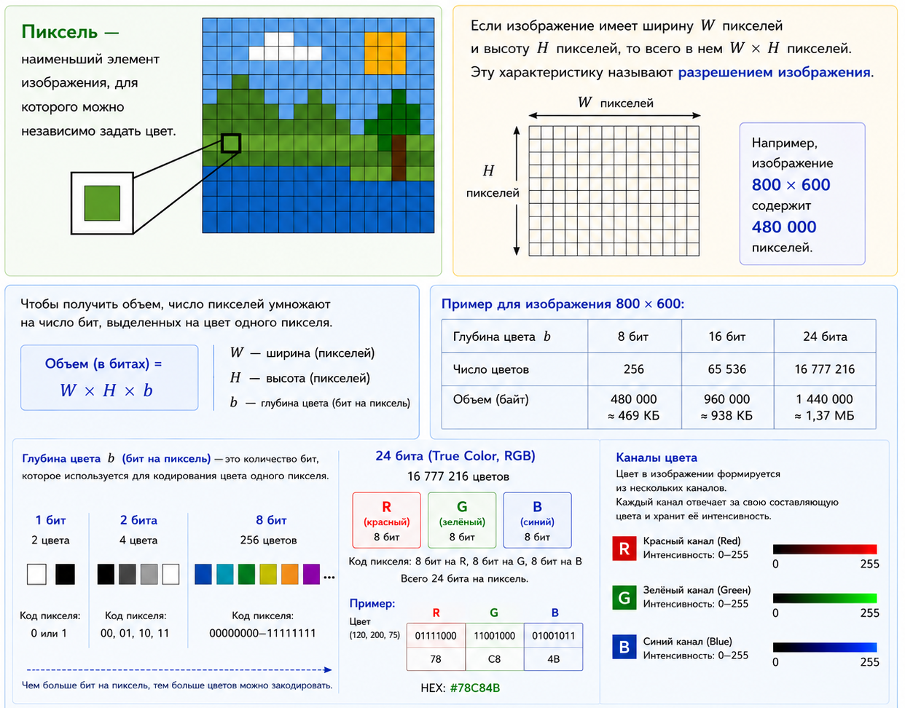
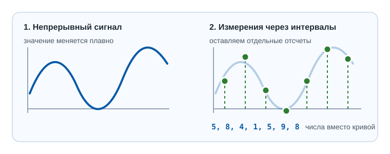
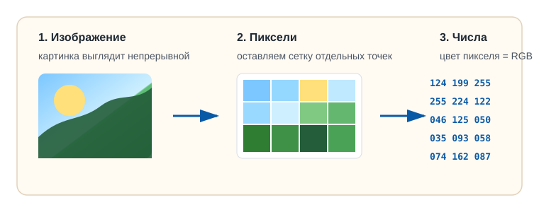
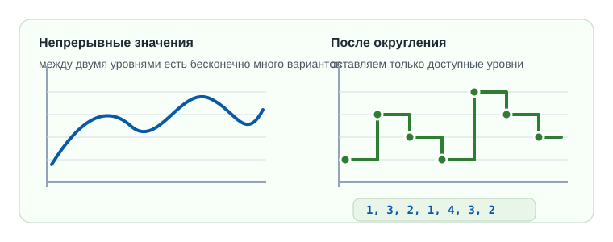
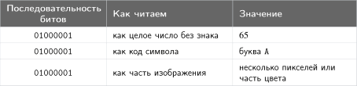
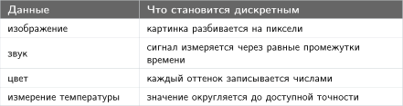
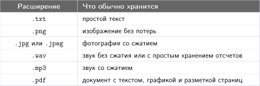
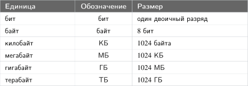
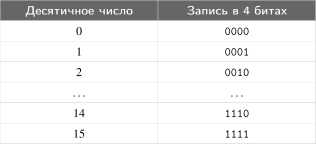

Кодирование информации

Для передачи, хранения и обработки информацию часто переводят в форму, удобную для этих операций. Такое преобразование называют кодированием.
В этой главе мы будем рассматривать цифровое кодирование: как представить текст, изображение или звук в виде чисел, а затем записать эти числа двоичным кодом.
Во многих случаях данные сначала выражают числами в привычной десятичной системе, а уже потом переводят в двоичный код.
Двоичный код
Двоичный код — это код, состоящий из двух знаков: \(0\) и \(1\).
Все, что происходит в цифровых устройствах, в конечном счете записывается в двоичном виде. Такой способ удобен для передачи, хранения и обработки данных: есть сигнал — \(1\), нет сигнала — \(0\).

С помощью одного двоичного разряда можно закодировать два состояния. Это 1 бит информации.
1 bit (англ.) — сокращение от binary digit
Если использовать \(k\) бит, можно закодировать \(2^k\) разных состояний.
Процессору удобнее обрабатывать сразу группы битов. Такая минимальная группа — байт (byte, англ. «кусок»).
Один байт содержит 8 бит.
Чем больше байтов выделено, тем больше разных состояний можно закодировать:
| Объем | Биты | Число состояний |
|---|---|---|
| \(1\) байт | \(8\) бит | \(2^8 = 256\) |
| \(2\) байта | \(16\) бит | \(2^{16} = 65\,536\) |
| \(4\) байта | \(32\) бита | \(2^{32} = 4\,294\,967\,296\) |
| \(8\) байт | \(64\) бита | \(2^{64} = 18\,446\,744\,073\,709\,551\,616\) |
Большие объемы данных неудобно измерять отдельными байтами. Поэтому используют более крупные единицы, образованные умножением на \(1024\):
Кодирование чисел
Каждому десятичному числу можно сопоставить двоичный код. Но диапазон значений зависит от того, сколько байтов выделено на хранение.
Если на число выделен \(1\) байт и хранятся только беззнаковые целые числа, то можно закодировать значения от \(0\) до \(255\). Например,
Ниже показаны все коды чисел, которые можно записать одним байтом:
Однобайтовые коды беззнаковых чисел от \(0\) до \(255\)
Переполнение разрядной сетки
В \(8\) битах можно закодировать беззнаковые целые числа от \(0\) до \(255\).
Все числа больше \(255\) уже не помещаются в этот диапазон. Например, двоичная запись числа \(256\) — \(\mathtt{100000000}\) — содержит \(9\) разрядов.
Переполнение разрядной сетки возникает, когда значение не помещается в отведенное число разрядов.
Переполнение может приводить к неожиданным результатам работы программы, поэтому важно понимать, как данные хранятся в памяти компьютера.
Все числа больше \(255\) требуют больше \(8\) двоичных разрядов. Например, число \(256\) требует \(9\) разрядов: если доступно только \(8\), старший разряд не помещается.

Кодирование символов
Как и числам, каждому двоичному коду можно сопоставить символ. Так компьютер работает с текстом: при выводе он превращает двоичные коды в символы на экране, а при сохранении присваивает каждому символу его двоичный код по таблице кодировки. Один из таких стандартов — ASCII: он задает коды от \(0\) до \(127\), которые можно записать одним байтом.
ASCII — сокращение от American Standard Code for Information Interchange, «американский стандартный код для обмена информацией». Базовый ASCII занимает младшую половину байта: коды от \(\mathtt{00000000}\) до \(\mathtt{01111111}\). Это \(2^7 = 128\) кодов.
Старшая половина байта, коды \(128\)–\(255\), не входит в базовый ASCII. В старых однобайтовых кодировках ее использовали для национальных алфавитов, псевдографики и специальных символов. Например, в кодировке Windows-1251 там размещались кириллические буквы.
В ASCII входят:
- служебные управляющие символы с кодами от \(0\) до \(31\);
- пробел с кодом \(32\);
- цифры от «0» до «9» с кодами от \(48\) до \(57\);
- латинские заглавные буквы от «A» до «Z» с кодами от \(65\) до \(90\);
- латинские строчные буквы от «a» до «z» с кодами от \(97\) до \(122\);
- знаки препинания, скобки, математические символы и другие служебные знаки.
Фрагмент ASCII-таблицы
Кодирование изображений
Изображение представляют как прямоугольную сетку пикселей. Цвет каждого пикселя кодируется отдельно, поэтому общий объем без сжатия зависит от разрешения изображения и глубины цвета.

Когда цвет нужно записать текстом, часто используют HEX-запись: это компактная форма RGB-кода. HEX — сокращение от hexadecimal, «шестнадцатеричный». После знака # идут три пары шестнадцатеричных цифр: для красного, зеленого и синего каналов. Каждая пара кодирует значение канала от \(\mathtt{00}\) до \(\mathtt{FF}\). Например, #FF0000 означает \(R = 255\), \(G = 0\), \(B = 0\).
Ниже показаны примеры \(24\)-битных RGB-кодов в десятичной, двоичной и HEX-записи:
Кодирование звука
При цифровой записи звук представляют как последовательность измерений звукового сигнала. Микрофон превращает колебания воздуха в электрический сигнал, а устройство записи через равные промежутки времени снимает его значение. Этот процесс называется дискретизацией.
Частота дискретизации — количество отсчетов звукового сигнала, записанных за одну секунду.
Отсчет — одно числовое значение сигнала в выбранный момент времени.
Например, частота \(44{,}1\) кГц означает \(44\,100\) отсчетов в секунду. Каждый отсчет округляют до одного из доступных уровней и записывают битами. Если на один отсчет выделено \(24\) бита, можно различить \(2^{24}\) уровней амплитуды.
Для одного канала без сжатия объем записи длительностью \(t\) секунд считают так:
Для стереозвука хранят два канала, левый и правый, поэтому объем умножается на \(2\). Числовая последовательность отсчетов образует цифровую звуковую дорожку. При воспроизведении программа читает эти числа и восстанавливает сигнал, который динамик снова превращает в звук.
Варианты иллюстраций дискретизации
Вариант 1. Сигнал: показывает переход от непрерывной кривой к отдельным измерениям.

Вариант 2. Изображение: показывает, как картинка превращается в сетку пикселей и RGB-числа.

Вариант 3. Уровни: показывает округление непрерывных значений до конечного набора уровней.

Легаси
Когда вы вводите букву A, компьютер не хранит в памяти изображение этой буквы. Сначала букве ставится в соответствие число. Например, в UTF-8 латинская буква A записывается числом \(65\), а это число хранится байтом \(\mathtt{01000001}\).
Когда программа снова показывает букву на экране, она выполняет обратное действие: читает байт, получает число \(65\) и по таблице символов восстанавливает A.
Так работают все данные: перед хранением или передачей их записывают по правилу, а при чтении восстанавливают смысл по тому же правилу.
Кодирование — это представление информации в форме, удобной для хранения, передачи или обработки.
Код — правило такого преобразования. Кодом также называют набор знаков закодированного сообщения.
Декодирование — обратное преобразование: восстановление исходной информации по закодированному сообщению и правилу.
Без правила кодирования набор знаков не имеет однозначного смысла.

Азбука Морзе — пример кода без компьютера. Буквы и цифры в ней записываются короткими и длинными сигналами: точками и тире. Правило кодирования задает соответствие между символом и последовательностью сигналов.
Разберем слово SOS:
| Символ | Код Морзе |
|---|---|
| S | ... |
| O | --- |
| S | ... |
Получаем сообщение:
При декодировании делают обратное: разбивают сообщение на группы и по таблице восстанавливают символы:
Задачи для тренировки: кодирование и декодирование
1. По таблице Морзе закодируйте слово CAT.
Ответ
CAT → -.-. .- -
2. Декодируйте сообщение .--- .- ...- .-.
Ответ
.--- .- ...- .- → JAVA
3. Почему для декодирования сообщения ... --- ... нужна таблица Морзе?
Ответ
Потому что сами точки и тире не называют буквы. Нужна таблица, которая задает правило: какая группа сигналов какой букве соответствует.
Почему компьютер хранит данные нулями и единицами
Чтобы передать информацию, нужно менять состояние носителя: напряжение в проводе, магнитный участок на диске, свет на экране. Чем меньше разных состояний надо различать, тем проще построить надежную систему.
Двоичное кодирование — это кодирование с помощью двух знаков.
В компьютере этими знаками обычно служат \(0\) и \(1\).
Электронные схемы удобно делать как переключатели: сигнал выше порога читается как \(1\), ниже другого порога — как \(0\). Поэтому двоичный код хорошо подходит для хранения и обработки данных.
Небольшие помехи обычно не меняют смысл данных: если сигнал уверенно попал в зону \(0\) или \(1\), схема все равно прочитает его правильно. Из таких двухсостояний удобно строить память, логические элементы и арифметические операции.
Сами по себе биты не говорят, что перед нами: число, буква, цвет пикселя или фрагмент звука. Смысл появляется только тогда, когда известно правило кодирования.
Например, одну и ту же последовательность 01000001 можно прочитать по-разному.


Обычно компьютерное представление строится так:
- исходные данные разбивают на отдельные элементы;
- каждому элементу ставят в соответствие число;
- число записывают в двоичном виде;
- при чтении выполняют обратные шаги.
Правило кодирования задает, какие объекты можно записывать и как читать полученный код.
Один и тот же код может иметь разный смысл, если его читать по разным правилам.
Как непрерывные данные превращают в числа
Символ A уже удобно кодировать числом: в таблице символов ему соответствует код \(65\). Со звуком, температурой или яркостью сложнее: такие данные меняются непрерывно, а компьютер умеет работать только с конечным набором кодов.
Аналоговый сигнал — это сигнал, который в каждый момент времени может принимать любые значения в некотором диапазоне.
Дискретный сигнал — это последовательность отдельных значений, снятых в отдельные моменты времени.
Дискретизация — это переход от непрерывных данных к набору отдельных значений.
Для звука измеряют громкость сигнала через равные промежутки времени. Для изображения берут отдельные точки — пиксели. Каждое измерение округляют до одного из доступных числовых уровней, а затем записывают это число битами.
Важно: непрерывность и дискретность — это свойство представления. Например, температура тела меняется непрерывно, а запись \(36{,}6\) уже дискретна, потому что значение округлено и записано конечным числом цифр.
Обычно при дискретизации делают два шага:
- выбирают, в какие моменты измерять сигнал;
- выбирают, до каких уровней округлять результат.
Примеры дискретизации:

Для изображения это количество пикселей и число бит на цвет. Для звука — частота дискретизации и число бит на один отсчет. Чем чаще измерения и чем больше доступных уровней, тем точнее представление, но тем больше объем данных.
Например, символ A кодируется по цепочке:
При декодировании программа выполняет шаги в обратную сторону: читает биты, получает число, затем по таблице символов восстанавливает символ.
Для символов правило задают кодовые таблицы и кодировки: исторически использовали ASCII, а в современных системах обычно применяют Unicode и UTF-8.
Изображение кодируется похожим способом: картинку разбивают на пиксели, цвет каждого пикселя записывают числами, а числа переводят в биты. Если каждый пиксель хранит \(24\) бита цвета, то на красный, зеленый и синий каналы обычно приходится по \(8\) бит.
Формат файла задает правило чтения
На диске данные обычно хранятся в файлах. Файл не хранит «картинку» или «звук» как готовый объект; внутри него лежат байты, которые программа читает по правилам формата.
Файл — это именованная последовательность байтов.
Формат файла — это правило, по которому программа должна читать байты файла.
Кроме основных данных файл часто хранит и служебную информацию: размеры изображения, глубину цвета, частоту звука, число каналов, имя автора и другие параметры.
Расширение файла помогает понять, какой формат ожидается. Например, в имени photo.png расширение .png подсказывает, что файл должен быть изображением PNG.

Расширение не меняет данные само по себе. Если переименовать image.png в image.jpg, байты внутри файла не станут JPEG-изображением. Для настоящего изменения формата нужна программа, которая прочитает старый формат и запишет данные по правилам нового формата.
Измерение информации
Бит — минимальная двоичная ячейка данных. Она хранит одно из двух значений: \(0\) или \(1\).
Бит — одна двоичная ячейка данных.
Байт — группа из \(8\) бит.
В учебной модели байт можно считать минимальной порцией данных, с которой обычно работают память и обработка данных. Размеры файлов почти всегда считают в байтах.
Один бит дает \(2\) варианта: \(0\) или \(1\). Два бита дают \(4\) варианта: 00, 01, 10, 11. Каждый новый бит удваивает число возможных кодов.
Если под значение выделено \(I\) бит, то число разных кодов равно
Для одного байта получаем:
Значит, один байт может хранить один из \(256\) разных кодов.
Большие объемы неудобно считать в отдельных битах: числа быстро становятся слишком большими. Поэтому используют более крупные единицы.
Основные единицы объема данных:


В этой главе используются двоичные кратные единицы:
Для множителя \(1024\) в стандартах есть отдельные названия: кибибайт, мебибайт, гибибайт. В учебных задачах чаще используют привычные обозначения КБ, МБ, ГБ. Поэтому в этой главе КБ означает \(1024\) байта.
В характеристиках накопителей и сетевых скоростей иногда используют десятичный счет по \(1000\). Из-за этого числа в рекламных спецификациях и в учебных задачах могут отличаться.
Объем без сжатия
Если данные хранятся без сжатия, их объем считают по элементарным частям: символам, пикселям или отсчетам звука. Сначала находят количество таких элементов, затем умножают на число бит для одного элемента.
Если данные не сжаты, то
Для текста элементом может быть символ, для изображения — пиксель, для звука — отсчет.
Если сообщение кодируется кодом фиксированной длины, сначала находят, сколько бит требуется на один символ. Для алфавита из \(N\) символов выбирают минимальное число бит \(i\), для которого выполняется
Тогда сообщение длины \(L\) символов занимает
бит.
Задача:
Робот понимает четыре команды: вверх, вниз, влево и вправо. Сообщение состоит из \(11\) команд. Найдите его объем.
Решение:
Для четырех команд нужно \(2\) бита на один символ:
Тогда полный объем сообщения:
Ответ: \(22\) бита.
Задача:
Текст состоит из \(2000\) символов. На каждый символ выделяется \(1\) байт. Найдите объем текста.
Решение:
Переведем в килобайты:
Ответ: \(2000\) байт, или примерно \(1{,}95\) КБ.
Задача:
Цветное изображение имеет размер \(640 \times 480\) пикселей. На каждый пиксель выделяется \(24\) бита. Найдите объем изображения без сжатия.
Решение:
Количество пикселей:
Общий объем в битах:
Переведем в байты:
Переведем в килобайты:
Ответ: \(900\) КБ.
В реальных файлах объем может отличаться от такой оценки. Формат файла может добавлять служебные данные, а сжатие может сильно уменьшать размер.
Задачи для тренировки: измерение информации
1. Сколько бит в \(5\) КБ?
Ответ
2. Переведите \(4096\) байт в килобайты.
Ответ
3. Сообщение содержит \(3500\) символов. На каждый символ выделяется \(1\) байт. Найдите объем сообщения в байтах и битах.
Ответ
\(3500\) байт.
4. Изображение \(320 \times 200\) пикселей хранится с глубиной \(8\) бит на пиксель. Найдите объем без сжатия.
Ответ
Диапазон значений и переполнение
Когда под значение выделяют фиксированное количество бит, диапазон возможных значений ограничен.
Разрядная сетка — это фиксированное число бит, выделенное для записи значения.
Переполнение возникает, когда результат не помещается в выделенное число бит.
Формула \(N = 2^I\) показывает, сколько разных кодов можно записать в \(I\) битах. Если коды используются для беззнаковых целых чисел, диапазон обычно начинается с \(0\) и заканчивается числом \(N - 1\).
Например, в \(4\) битах можно записать
разных беззнаковых значений: от \(0\) до \(15\).

Следующее число, \(16\), уже требует пятого бита:
Если хранить можно только \(4\) бита, старший пятый бит не помещается. В системах, где переполнение не проверяется отдельно, может остаться только младшая часть:
Потеря данных возникает не только при переполнении. Если непрерывное значение записывают конечным числом кодов, часть точности теряется. Поэтому вещественные числа обычно хранятся приближенно: значение вроде \(0{,}1\) не всегда представимо в памяти абсолютно точно.
Задача:
Сколько бит нужно, чтобы хранить беззнаковые целые числа от \(0\) до \(1000\)?
Решение:
Нужно не меньше \(1001\) разных значений: от \(0\) до \(1000\).
Проверим степени двойки:
\(9\) бит не хватает, \(10\) бит хватает.
Ответ: \(10\) бит.
Задача:
В беззнаковой \(8\)-битной разрядной сетке хранится число \(250\). Что произойдет при прибавлении \(10\), если оставить только младшие \(8\) бит?
Решение:
Точный результат:
В \(8\) битах можно хранить значения от \(0\) до \(255\), поэтому \(260\) не помещается.
Если оставить только остаток по \(256\), получится:
Ответ: произойдет переполнение, останется значение \(4\).
Разрядная сетка в типах Java
В Java размер основных числовых типов фиксирован. Это значит, что у каждого типа есть свой диапазон и своя точность.
| Тип | Размер | Что хранит | Диапазон или точность |
|---|---|---|---|
| int | \(4\) байта | целые числа | от \(-2^{31}\) до \(2^{31} - 1\) |
| long | \(8\) байт | большие целые числа | от \(-2^{63}\) до \(2^{63} - 1\) |
| double | \(8\) байт | вещественные числа | примерно \(15\)–\(17\) значащих десятичных цифр |
Если значение выходит за диапазон int или long, возникает переполнение. Если значение хранится в double, оно может быть записано приближенно: диапазон большой, но точность конечна.
Задачи для тренировки: диапазоны и переполнение
1. Сколько разных значений можно закодировать в \(6\) битах?
Ответ
2. Какой диапазон беззнаковых целых чисел можно хранить в \(6\) битах?
Ответ
От \(0\) до \(63\).
3. Сколько бит нужно, чтобы хранить беззнаковые числа от \(0\) до \(255\)?
Ответ
Нужно \(256\) разных значений.
Ответ: \(8\) бит.
4. Какой тип Java выбрать для значения \(3000000000\): int или long?
Ответ
long.
Число \(3000000000\) больше максимального значения int.
Один байт дает \(256\) разных кодов, но если читать их как беззнаковые целые числа, максимальное значение равно \(255\), а не \(256\): счет начинается с \(0\).